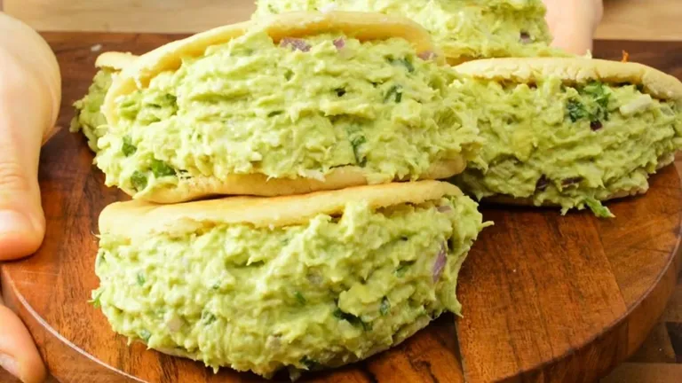

La reina pepiada
La reina pepiada es la arepa más famosa de Venezuela, sin lugar a dudas. Es un tipo de arepa asada que se rellena con una mezcla de pollo desmechado, mayonesa, aguacate majado y en rodajas, cilantro, y especias.La reina pepiada fue inventada por los hermanos Álvarez y su madre María de Los Santos Álvarez. La Sra. María de los Santos, oriunda de los Andes venezolanas emigro a Caracas con sus ocho hijos luego de enviudar. Ahora estaba obligada a buscar los medios de trabajo para sostenerlos. En medio del boom petrolero y el éxodo campesino, Caracas estaba repleta de oportunidades. La familia Álvarez llega a la Capital a principios de los 50 y se instala a vivir en el Guarataro, una de las zonas más pobres de la ciudad. Pero no permitieron que eso los amilanara, en lo más mínimo. Ahí mismo montan un local de empanadas que al poco tiempo, no solo les permitiría mantenerse sino también ahorrar para abrir otro local mejor ubicado.